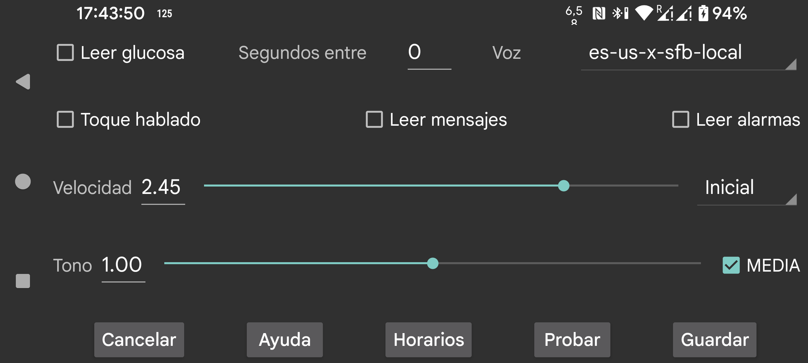

ar be de es fr nl pl ru tr uk zh en
Lee en voz alta los valores de glucosa cuando llegan.
Segundos entre lecturas: indica cuántos segundos debe esperar Juggluco antes de pronunciar el siguiente valor. Los valores siempre se leen en el momento en que llegan. Si indicas un valor grande, Juggluco omitirá los valores que lleguen antes de que haya pasado ese tiempo.
Voz: selecciona una voz de una lista de voces disponibles.
Velocidad: un valor mayor significa que hablará más deprisa.
Tono: un valor mayor significa un tono más agudo.
Probar: pronuncia el último valor de glucosa.
En algunos teléfonos hay que cambiar la configuración de Android para texto a voz. A veces es necesario instalar datos de voz o cambiar la configuración del motor. En teléfonos Samsung, por ejemplo, puede ser necesario seleccionar Speech Services by Google en lugar del motor de texto a voz de Samsung para poder elegir distintas voces.
Si Talk Touch está activado, tocar determinados elementos hará que se hablen:
Lee los mensajes que aparecen temporalmente en pantalla y el resultado de un escaneo, incluidos los mensajes de error y el valor de glucosa.
Pronuncia el nivel de glucosa durante las alarmas de glucosa alta y baja. Se lee tanto al iniciarse la alarma como al detenerse.
Selecciona qué perfil está activo. Por defecto es el perfil predeterminado. Todos los ajustes en menú izquierdo → Ajustes → Alarmas y Hablar son específicos del perfil activo.
Puedes configurar Juggluco para que un perfil pase a estar activo a una hora concreta del día.
Puedes subir o bajar el volumen de la voz en los ajustes de sonido de Android. Si MEDIA no está activado, en mi teléfono puedo hacerlo con el control de volumen de notificaciones y en mi reloj Wear OS con el control de volumen del sistema. No debería oírse cuando No molestar está activado. Si MEDIA sí está activado, se usa el control de volumen multimedia y en la mayoría de teléfonos sí se oye durante No molestar.
La lectura de alarmas es diferente. Las alarmas se pronuncian en la categoría Alarmas si está activado La alarma es una alarma. En mi teléfono el volumen se regula con el control de volumen de alarmas; en mi reloj, con el control de volumen de notificaciones.